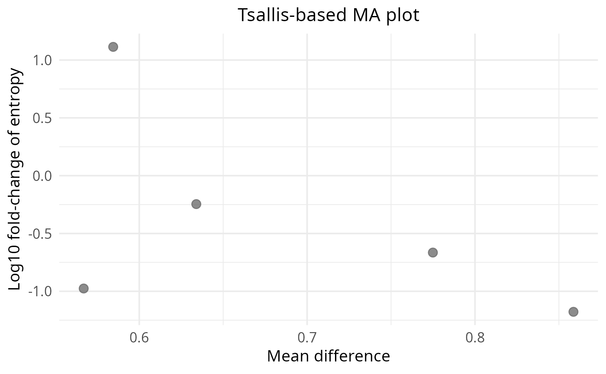

Wrapper around `plot_ma(..., type = "tsallis")` for convenience and clearer API separation.
Arguments
- x
Data.frame from `calculate_difference()`.
- sig_alpha
Numeric significance threshold for adjusted p-values (default: 0.05).
- x_label
Optional x-axis label passed to `plot_ma`.
- y_label
Optional y-axis label passed to `plot_ma`.
- title
Optional plot title passed to `plot_ma`.
- ...
Additional arguments passed to `plot_ma()`.
Examples
x <- data.frame(genes = paste0("g", seq_len(5)), mean = runif(5), log2_fold_change = rnorm(5))
plot_ma_tsallis(x)
